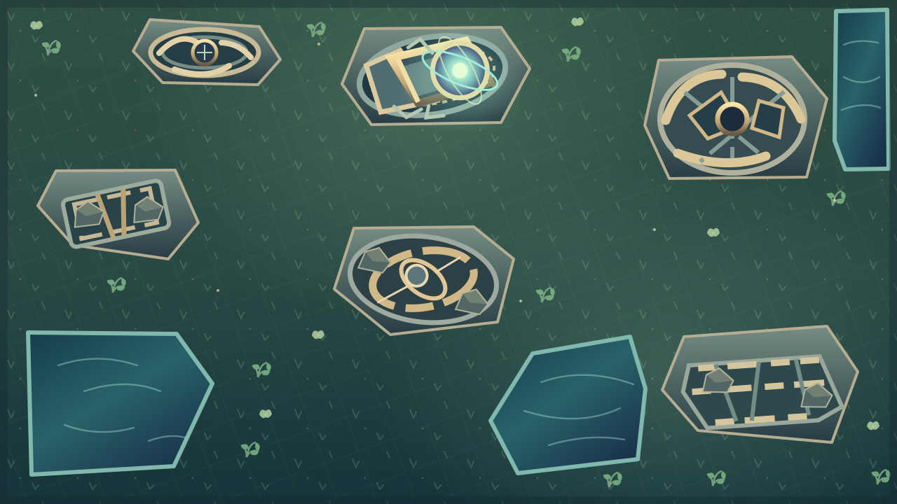

Prism Bastion · Кампания 12
Павшая обсерватория
Поднять гравитационную линзу · Геометрия III
Рекомендуется
Сложно / 80 волн
Тактическое поле
Один вход · три прямых · шесть крупных обломков
Зелёные площадки, водный резерв и видимый выход

Поднять гравитационную линзу · Геометрия III
Сложно / 80 волн
Один вход · три прямых · шесть крупных обломков
Зелёные площадки, водный резерв и видимый выход